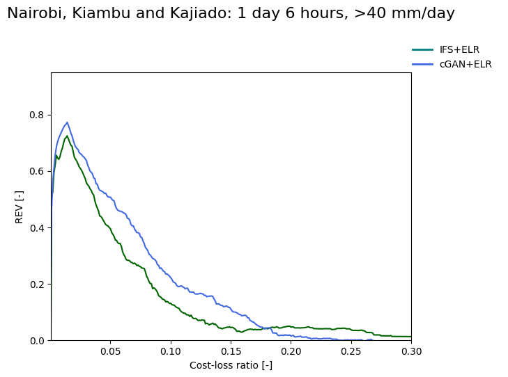

Categories of reliability | Cost-loss ratios
The Relative Economic Value (REV) of the forecast (y-axis) for a selected rainfall threshold. REV is plotted against the cost-loss ratio equivalent to the forecasted probability of threshold exceedance.
REV scores are calculated using test years of 2021, 2023 and 2024. A perfect REV score would be 1, whereas 0 means no value is added ontop of a default always/never forecasted event.
For further information on the REV refer to Wilks (2001).
Region: Lead time: Threshold: mm/day. Scale: 